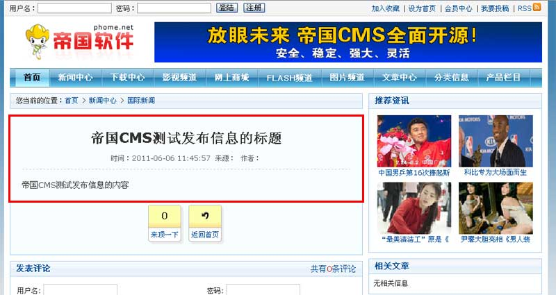

| 一、增加信息流程： |
| 1、选择增加信息的终极栏目； 2、进入增加信息页面，填写内容并提交； 3、生成相关页面（将信息发布到前台）。 |
| 二、进入增加信息页面的三种方法： |
| 您可根据使用习惯选择其中的一种方法学习。 |
| 方法一： |
| 1. 单击“增加信息”快捷菜单； 2. 在右侧的栏目选择界面中，点击增加信息的终极栏目； （选择下拉框中的蓝色条，蓝色条代表终极栏目可直接增加信息；白色条代表非终极栏目，不能增加信息） |
| 方法二： |
| 1. 单击“信息”菜单； 2. 在左侧的栏目列表界面中，选择需增加信息的终极栏目（如栏目“国际新闻”）并单击； 3. 在右侧的信息列表界面中，单击“增加信息”按钮。 |
 |
| 方法三： |
| 1.单击“信息”菜单； 2.在左侧的栏目列表界面中，选择需增加信息的终极栏目（如栏目“国际新闻”）并右键单击； 3.在出现的右键菜单中，单击“增加信息”。 |
| 三、进入增加信息页面，填写内容并提交 |
| 1、单击“增加信息”按钮后，出现增加信息界面，如下图：(以新闻模型为例，其它模型可举一反三) |
| 2、点击“提交”按钮后，就会提示增加信息成功，如下图： |
| 3、我们点击“返回信息列表”就能看到我们刚增加的信息，如图： |
| 四、生成相关页面（将信息发布到前台） |
| 1、在信息列表页面，选择“生成当前栏目、父栏目与首页”下拉框中的内容，单击“提交”按钮，将信息发布到前台栏目页、首页（见下图）： |
2、点击“提交”按钮后，即可在前台看到我们刚才增加的信息： |
| 图1：首页 图2：父栏目页 图3：栏目页 图4：内容页  |
| 增加或修改信息后，将信息发布到前台另一种自动的方法：栏目选项设置里设置增加/修改信息时自动生成相关页面 |
| 此方法在信息数量多的情况下比较耗资源，不推荐使用。如果信息比较少时可以采用。 |
| 系统后台可设置增加/修改信息并提交后，信息是否直接发布到前台（包括生成内容页、生成当前栏目、父栏目与首页）。 系统终极栏目管理属性默认设置为：增加/修改信息并提交后，直接生成内容页（即前台信息内容页面），不直接生成栏目页与首页（即前台栏目列表与 首页中不立即显示已增加的信息），如下图： |
| 上面你可以设置成生成相关页面，这样就不需要手动选择“生成当前栏目、父栏目与首页”下拉框中的内容，单击“提交”按钮，将信息发布到前台。 |
| 五、信息设置参数说明 | ||||||||||||||||||||||||||||||
| (一)、基本信息 | ||||||||||||||||||||||||||||||
|
||||||||||||||||||||||||||||||
| (二)、选项设置 | ||||||||||||||||||||||||||||||
|
||||||||||||||||||||||||||||||
| (三)、投票设置 | ||||||||||||||||||||||||||||||
|
||||||||||||||||||||||||||||||
| 设置投票模板后，内容模板需加“[!--info.vote--]”显示信息投票变量才会显示。 |